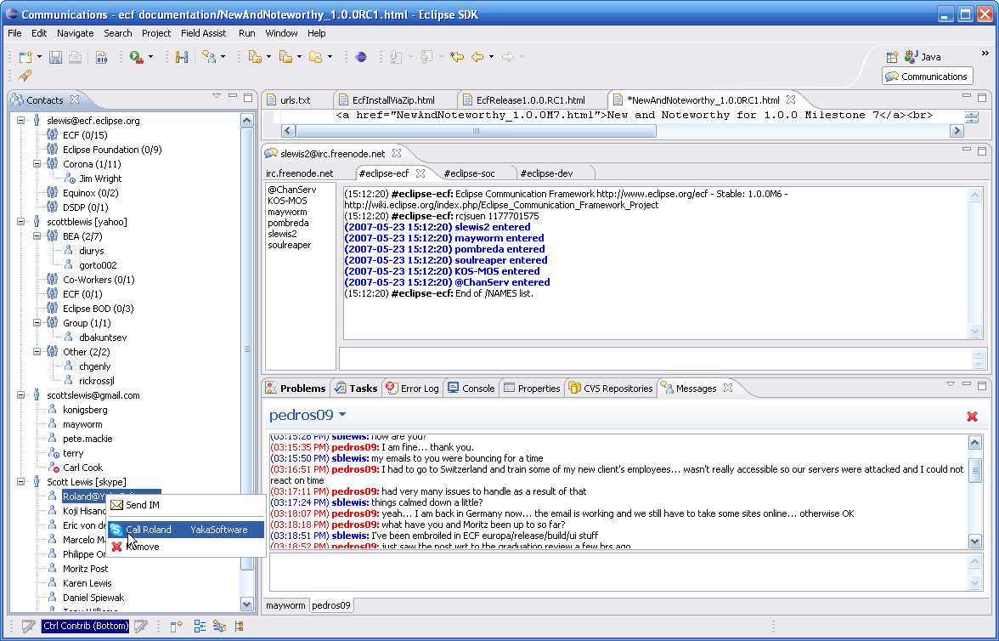
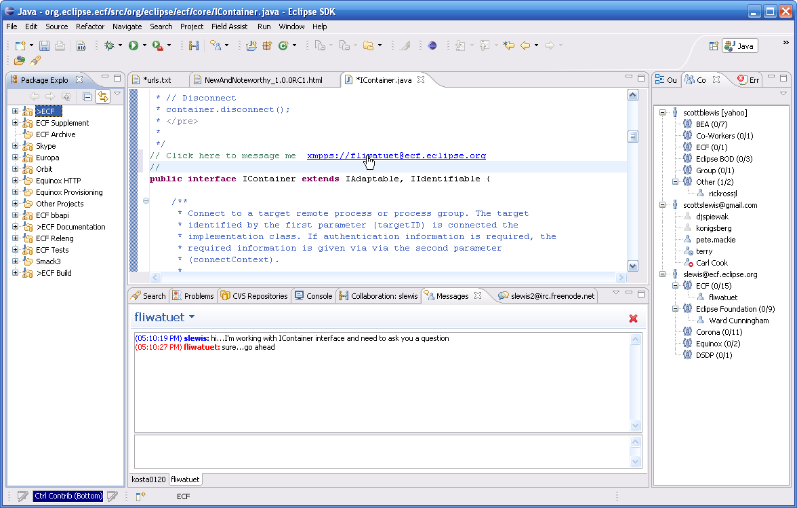
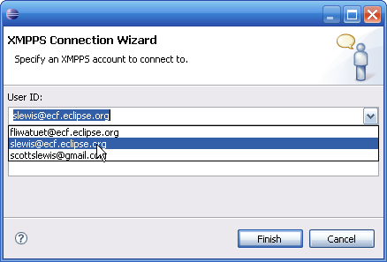
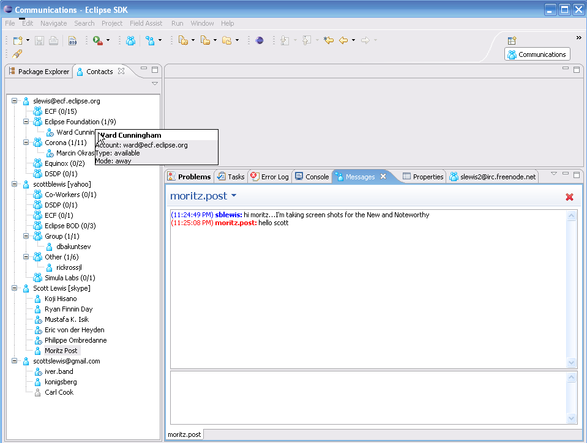
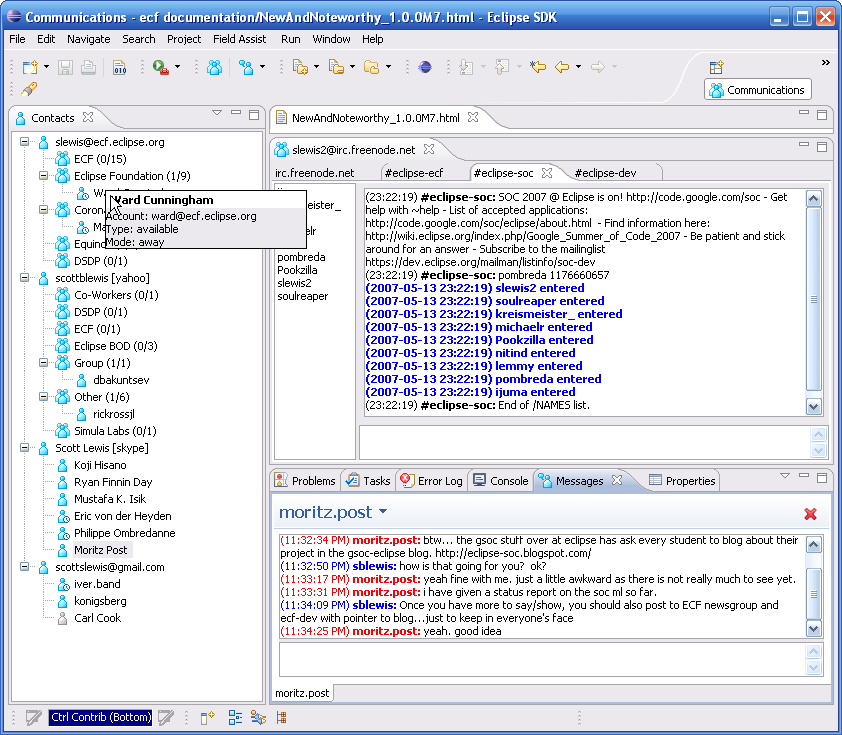
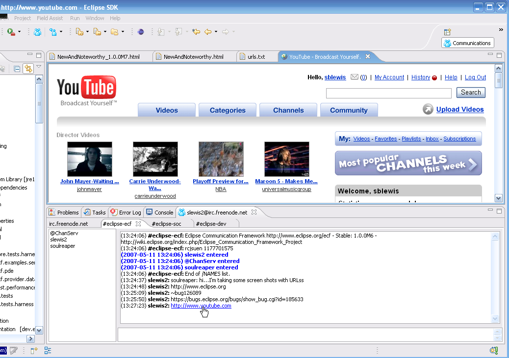

|
Real-Time Collaboration Features on IM
|
URL sharing and view sharing are now enabled on XMPP/XMPPS/Google Talk/Skype providers using
the ECF datashare API. See URL Sharing
and View Sharing for description.
|
New Graphics
|

See bug #183015
|
|
Click hyperlinks in text files to initiate communication
|
If the user is connected, when a hyperlink is clicked upon an IM session
is started with the person given in the hyperlink. For example,
// Click here to talk with me: xmpps://fliwatuet@ecf.eclipse.org
when clicked upon, this hyperlink will start IM/Chat with fliwatuet@ecf.eclipse.org. This allows embedding
real-time communication sessions within source documents, text documents, etc.
See example below:

See Bug #187060.
|
|
Persistence for Login
|

See Bug #181509.
|
|
Skype Provider
|
Skype Provider Available at ECF OSU Open Source Lab site. See
also here for some screen shots
|
|
IRC Bot Loose at irc.freenode.net
|
An IRC bot based upon the ECF Bot Framework is
running at irc.freenode.net. See IRC Bot for details.
|
|
New Roster and Messages Views
|
There are new roster and messages views:

These views also are significantly refactored, simplifed, and made more extensible. See the classes
org.eclipse.ecf.presence.ui.MultiRosterView for the Contacts view, and org.eclipse.ecf.presence.ui.MessagesView
for the Messages View. Both are in the org.eclipse.ecf.presence.ui bundle.
|
|
Communications Perspective
|
Communications Perspective Added.

|
|
ShareCode Available in Incubation
|
ShareCode plugin available after IP approval. The ShareCode plugin, by Marcelo Mayworm for the
2006 Google Summer of Code are now availble in the EF repository. These plugins are available via
anonymous CVS with the following path: /cvsroot/technology, the following module org.eclipse.ecf/examples/plugins/org.eclipse.ecf.example.sharecode.
See the ShareCode wiki page for more info. This plugin will also be in a future distribution
of ECF.
|
|
All ECF Chat and Messages Views support viewing Hyperlinks
|
All ECF Chat, Messages, and Collaboration views now support embedded hyperlinks. To activate,
simply hold down the CTRL key
while pointing at the link:

|
|
MSN Provider
|
MSN Messenger provider added to support ECF-based instant message and presence via MSN Messenger Accounts.


|
|
Bittorrent Provider
|
Bittorrent provider added for file retrieval.

|
|
Peer-to-Peer File Transfer for XMPP Accounts
|
Peer-to-peer file transfer (using the ECF file transfer API) was added for XMPP accounts.

|
|
Enhanced Support for IRC command handling
|
Added greater support for IRC command handling. See bug #172958 for details.
Thanks to Mark Kropf for code contributions.
Also see N&N's for older milestone releases:
|
|
ECF API Changes |
|
Dynamic Menu Contributions to Roster View
|
The MultiRosterView now can be extended using the org.eclipse.ui.menus.menuContribution extension point. This can be done
using the new menuContribution extension point in the platform. See Menu Contributions
for more info.
|
|
Automated Build
|
ECF now has an automated build and server setup to run automated builds.
|
|
Examples of Extending MultiRosterView Context Menus
|
The ECF MultiRosterView can now be easily extended with additional functionality.
To do this, all that is necessary is to implement the new Platform UI extension point:
org.eclipse.ui.menus.menuContribution. Here's an example that adds an URL
sharing capability to the MultiRosterView context menu, when a roster entry is
selected. The following is from the org.eclipse.ecf.presence.collab.ui plugin.
First, the extension declaration:
<extension
point="org.eclipse.ui.menus">
<menuContribution
locationURI="popup:org.eclipse.ecf.presence.ui.MultiRosterView?before=additions">
<dynamic
class="org.eclipse.ecf.presence.collab.ui.URLShareRosterEntryContributionItem"
id="org.eclipse.ecf.presence.collab.ui.dynamic2">
</dynamic>
</menuContribution>
</extension>
With this declaration, the following code will be invoked when the user clicks the
right menu button on a roster entry (from URLShareRosterEntryContributionItem):
protected IAction[] makeActions() {
// check for Roster entry
final IRosterEntry entry = getSelectedRosterEntry();
IContainer c = getContainerForRosterEntry(entry);
// If roster entry is selected and it has a container
if (entry != null && c != null) {
final IChannelContainerAdapter channelAdapter = (IChannelContainerAdapter) c
.getAdapter(IChannelContainerAdapter.class);
// If the container has channel container adapter and is online/available
if (channelAdapter != null && isAvailable(entry)) {
URLShare tmp = URLShareRosterContributionItem.getURLShare(c
.getID());
// If there is an URL share associated with this container
if (tmp != null) {
final URLShare urlshare = tmp;
// Create action for sending
IAction action = new Action() {
public void run() {
// Actually send URL to selected user
urlshare.sendURL(entry.getRoster().getUser().getName(),entry.getUser().getID());
}
};
action
.setText(Messages.URLShareRosterEntryContributionItem_SEND_URL_MENU_TEXT);
action.setImageDescriptor(Activator.imageDescriptorFromPlugin(
Activator.PLUGIN_ID, Messages.URLShareRosterContributionItem_BROWSER_ICON));
// Return action for sending
return new IAction[] { action };
}
}
}
// Else return null...meaning we have no menu contribution to make
return null;
}
|
|
Instant Messaging History API
|
Added history API for accessing chat history information. See bug #177014
for details.
|
|
Chat Robot API
|
Added robot API and extension points for creating robots that can chat via IM or chat rooms. See bug 180078
for details. This API allows robots to be defined via two new extension points in the new plugin org.eclipse.ecf.presence.bot.
For example, here's the definition of an imrobot 'Fliwatuet' that will connect to the account at fliwatuet@ecf.eclipse.org and
then receive messages and notifications via the imcommand handler class org.eclipse.ecf.presence.bot.DefaultIMMessageHandler:
<extension
point="org.eclipse.ecf.presence.bot.imRobot">
<imRobot
connectId="fliwatuet@ecf.eclipse.org"
containerFactoryName="ecf.xmpp.smack"
id="org.eclipse.ecf.presence.imbot"
connectPassword="password"/>
</imRobot>
</extension>
<extension
point="org.eclipse.ecf.presence.bot.imMessageHandler">
<handler
imRobotId="org.eclipse.ecf.presence.imbot"
class="org.eclipse.ecf.presence.imbot.MyIMMessageHandler">
</handler>
</extension>
Here's an example for use of the chatroomrobot extension point for connecting to an IRC channel:
<extension
point="org.eclipse.ecf.presence.bot.chatRoomRobot">
<chatRoomRobot
chatRoom="#eclipse-ecf"
connectId="irc://slewis2_@irc.freenode.net"
containerFactoryName="ecf.irc.irclib"
id="org.eclipse.ecf.presence.bot.ircbot">
</chatRoomRobot>
</extension>
<extension
point="org.eclipse.ecf.presence.bot.chatRoomMessageHandler">
<handler
chatRoomRobotId="org.eclipse.ecf.presence.bot.ircbot"
class="org.eclipse.ecf.presence.bot.MyChatRoomMessageHandler">
</handler>
</extension>
See also the Bot Framework tutorial.
|
|
Discovery API Simplification
|
Small simplifications to the discovery API. For example, removed some methods from IDiscoveryContainerAdapter.
|
|
Support for Use of ECF in Equinox-based Runtimes (RCP, eRCP, Server)
|
Removed references to packages and classes that are Eclipse-based. For details see
bug #176322. With this change, all non-ui ECF
bundles (i.e. those whose name does not end with *.ui) are able to operate in all Equinox configurations...e.g.
servers, RCP apps, eRCP, and/or Eclipse.
|
|
Presence API Addition
|
Added org.eclipse.ecf.presence.chatroom.IChatRoomAdminListener
to notify registered listeners (listener registration via IChatRoomContainer.addChatRoomAdminListener) when the chat room subject changes/is changed asynchronously.
|
|
Shared Object API Addition
|
Added event notification for shared object message send and receive. See bug #172349 for details.
Also see N&N's for older milestone releases:
|